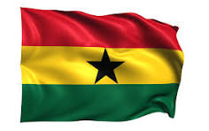

About Me
My name is Godfred and I go by the same name or Goddy. I was born in the central region of Ghana and live with my wife Wendy in Accra. I am currently working as a transport manager in a small firm. My wife is my world and I love spending time with her and our unborn child. I love to travel and learn new things.
Accra, Ghana

Ghana, located in West Africa along the Atlantic Ocean, is a nation rich in culture, history, and natural resources. Known as the "Gateway to Africa," it was the first sub-Saharan African country to gain independence from colonial rule in 1957 under Kwame Nkrumah, inspiring Pan-African movements across the continent. Modern-day Ghana spans diverse geographic features, including the world’s largest artificial lake, Lake Volta, and is rich in gold, cocoa, and oil. Ghana is one of Africa’s fastest-growing economies, driven by agriculture, mining, and a burgeoning oil industry. It is also celebrated for its stable democracy and peaceful elections, which have strengthened its role as a beacon of political stability in the region. A regional leader and global peace advocate, Ghana’s rich heritage, dynamic culture, and economic potential continue to make it a significant force in Africa and beyond. Its vision of becoming an industrialized middle-income nation by 2030 remains firmly within reach.